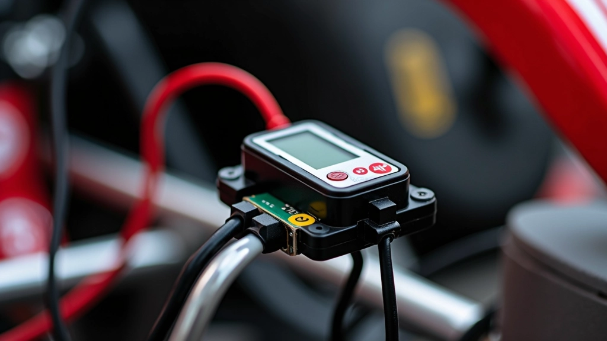
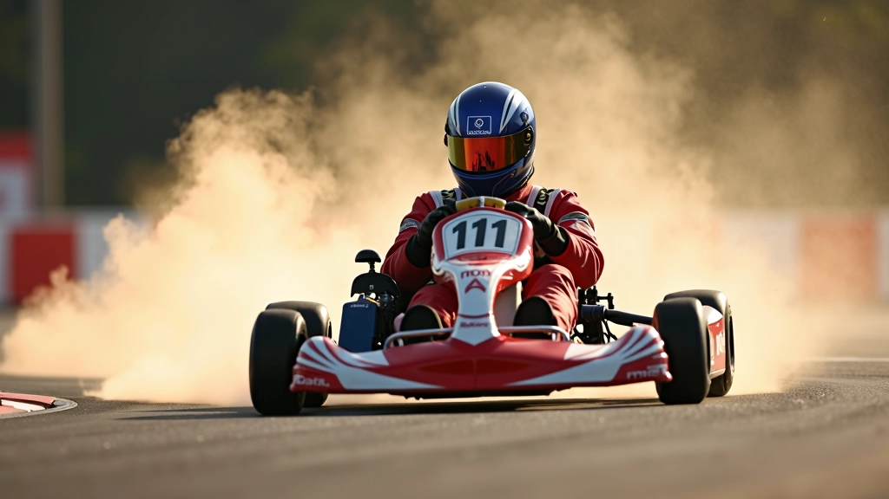

تسجيل البيانات وتحليل اللفات في الكارتينج
نظام شامل لتتبع أدائك وتحسين سرعتك على المضمار
نحن نوفر أدوات متقدمة لتسجيل البيانات وتحليل اللفات. كل لفة تعطيك معلومات قيمة عن أدائك — السرعة، التسارع، المنعطفات، كل شيء. من خلال فهم هذه البيانات، يمكنك تحسين تقنيتك بشكل حقيقي.
لماذا تحليل البيانات مهم
الكارتينج ليس عن السرعة فقط. إنه عن الدقة والتحكم والقرارات الذكية على المضمار. عندما تملك بيانات حقيقية عن أدائك، تستطيع أن ترى بالضبط أين تخسر الوقت. ربما تأخذ منعطفاً بسرعة كبيرة، أو ربما تترك مسافة على المستقيمات.
التلمتري (البيانات) توضح لك كل شيء. الأرقام لا تكذب. هذا هو الفرق بين سائق عادي وسائق جاد يريد أن يتحسن حقاً.
تحسين أداء المنعطفات
المنعطفات هي حيث يحدث السحر. البيانات توضح لك بالضبط متى تدخل المنعطف وبأي سرعة تخرج منه. إذا كنت تخسر الوقت هنا، ستعرف ذلك على الفور.
تتبع التطور عبر الزمن
كل لفة تُسجل وتُحفظ. تستطيع مقارنة لفتك اليوم مع لفتك من شهر مضى. هل أنت أسرع الآن؟ أين بالضبط تحسنت؟ الإجابات كلها في البيانات.

مقارنة مع المنافسين
لا تتنافس مع نفسك فقط. تستطيع أن ترى كيف يؤدي المنافسون الآخرون على نفس المضمار. أين تتقدم عليهم؟ وأين هم يتقدمون عليك؟ هذا يعطيك خطة واضحة للتحسن.
كيف نعمل
بيانات دقيقة
نحن نسجل كل شيء — السرعة، التسارع، الكبح، المسار. لا توجد تخمينات، فقط أرقام حقيقية.
تحليل متعمق
نحن لا نعطيك أرقام فقط. نساعدك تفهم ماذا تعني هذه الأرقام وكيفية استخدامها.
تحديثات منتظمة
الأنظمة والمعايير تتطور. نحن نتأكد من أن معداتنا وطرقنا محدثة دائماً.
لغة واضحة
نشرح الأشياء بطريقة تفهمها. لا توجد كلمات معقدة غير ضرورية.
أحدث الدروس والأدلة
تعلم من خبراء تحليل البيانات في الكارتينج


رحلتنا في تحليل البيانات
البداية
بدأنا برؤية بسيطة: مساعدة سائقي الكارتينج على فهم أدائهم بشكل حقيقي.
التطور
طورنا أنظمة أكثر دقة وأضفنا أدوات تحليل متقدمة تساعد السائقين على فهم بياناتهم.
التوسع
نوفر موارد موثوقة لتحليل البيانات والتدريب على الكارتينج.
اليوم
نحن هنا لمساعدتك على تحسين أدائك من خلال البيانات والتحليل الجاد.
من نحن
بدأنا مع رؤية واضحة: مساعدة السائقين على فهم أدائهم من خلال البيانات الحقيقية.
نسجل ونحلل بيانات الأداء في سباقات الكارتينج. كل لفة تعطيك معلومات قيمة.
نعمل من مركز الشيخ زايد للسباق في القاهرة، مصر. هنا حيث يحدث كل شيء.
لماذا تختار نظامنا
سريع وفعال
دقيق جداً
سهل الاستخدام
آمن وموثوق
دعم ممتاز
نتائج حقيقية
لحظات من المضمار

جاهز لتحسين أدائك؟
ابدأ الآن واكتشف كيف يمكن للبيانات أن تغير طريقة لعبك. سواء كنت مبتدئاً أو متقدماً، لدينا ما يناسبك.
نستخدم ملفات تعريف الارتباط لتحسين تجربتك على الموقع. بالمتابعة، أنت توافق على سياستنا.